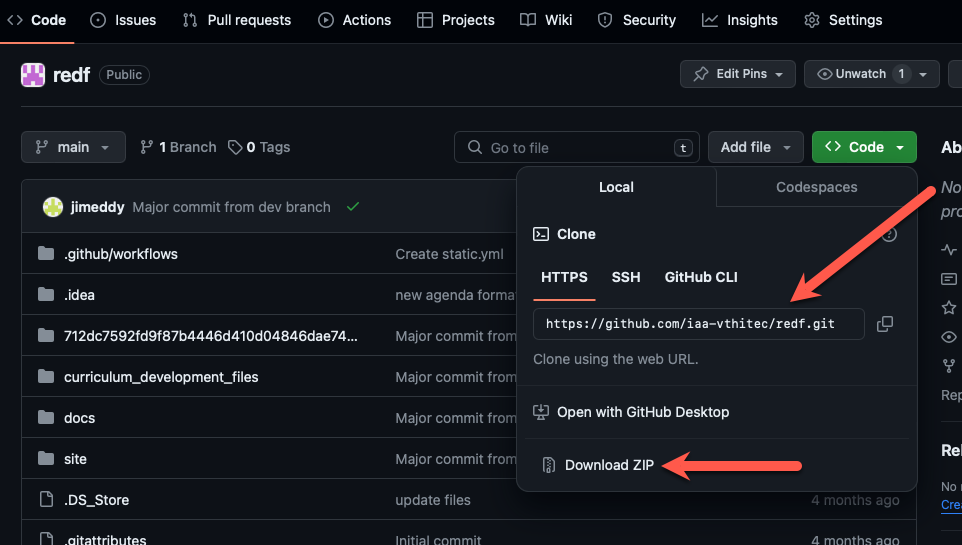

BCOE / REDF Pre-Apprenticeship Curriculum
Project Overview
Create a trauma-informed pre-apprenticeship curriculum to prepare program participants to enter a Registered Apprenticeship Program (RAP) with a sponsoring employer. This curriculum includes two programs, Digital Literacy and Technical Skills. The Digital Literacy curriculum was designed to establish a foundation in using modern digital computing devices in a guided and approachable manor. The second program, Technical Skills builds on that foundation to provide students with the prerequisite skill set necessary to enter a Registered Apprenticeship Program in a technical computer support occupation. The instructional approach should prioritize best-practices in trauma-informed training.
Curriculum Site
Curriculum materials are available for viewing by the instructor at the following URL: https://iaa-vthitec.github.io/redf/
Credentials:
username=viewer
password=qijkAp-0gashu-cimriz
Objectives
- Develop study skills
- Improve typing skills
- Learn fundamental computer operations
- Familiarize participants with common business applications
- Enhance participant employability
- Expand technical vocabulary and comprehension
- Increase confidence in using technology
- Develop IT troubleshooting skills
- Create an awareness and appreciation of cybersecurity best practices
- Understand IT helpdesk functions and operations
- Establish a growth mindset with motivation for continuous learning
Project File Structure
mkdocs.yml # The configuration file
docs/
index.md # The project homepage
digital_literacy.md # Digital Literacy Curriculum overview page
format.md # Provides description of currciulum format
lessons.md # Agends for digital literacy curriculum
technical.md # Home page for technical curriclum (TBD)
img/ # Documentation image directory
file/ # File directory for PDFs and other files
file/DART_V1.0_Download # DART Curriculum original and edited files
file/Technical_Skills_Files # Presentations and other curriculum files
video/ # Video source files directory
extra.css # Custom CSS style rules
... # Other markdown pages, images and other files.
712dc7592fd9f87b4446d410d04846dae744c676/ # Hashed directory name for login functionality
site/ # `mkdocs build` application build target directory
venv/ # virtual envvirontment, Python binaries
Repository Cloning
github repository location- https://github.com/iaa-vthitec/redf.gitexplore and download individual filesDownload ZIP- download entire project repository by clicking on theDownload ZIPlink from the< > Codebutton as shown in the following diagram:

Project Files Development
github version control- Recommended to track file changes via GitHubrecommended IDE- PyCharm for Python development and local server deployment: https://www.mkdocs.orgmkdocs used for documentation building- see documentation: https://www.mkdocs.orgmkdocs build- Build the documentation sitemkdocs -h- Print help message and exitmkdocs serve- Start the live-reloading docs servermkdocs build- Build the documentation sitemkdocs -h- Print help message and exit
Deployment via GitHub Pages
commit and push changes- copy contents of
sitedirectory into the712dc7592fd9f87b4446d410d04846dae744c676directory for access via (non-secure) login page deploy using GitHub Pages- Follow documentation to host curriculum site on GitHub Pages: https://docs.github.com/en/pages/getting-started-with-github-pages/configuring-a-publishing-source-for-your-github-pages-site